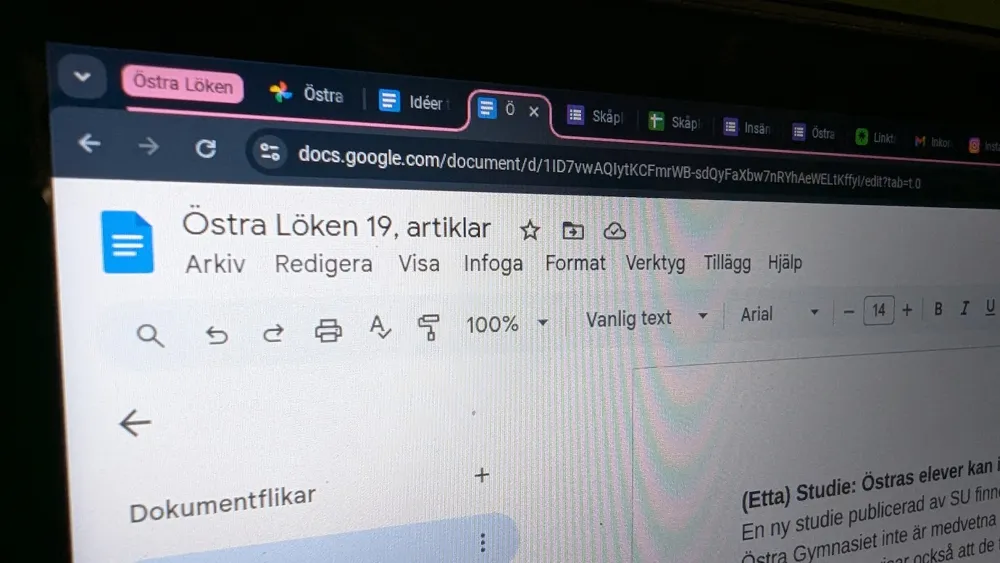

Krönika

Lökens reporter skriver artikel istället för att plugga för morgondagens matteprov
Söndag den 30 november 2025 sitter en Östra Löken reporter i vardagsrummet och skriver på tidningens nästa artikel – fastän han har prov dagen efter. Och det här är inte första gången det händer, efter en stickprovsundersökning av Östra Löken hittades det att över hälften av alla skribenter på Östra Löken har någon gång skrivit en artikel under stress för ett prov.
"Det är bara så det blir", säger Östra Löken påhittade chefredaktör Jöns Ohlsson. Han påstår att skrivandet av Östra Lökens artiklar faktiskt kan lätta lite av stressen som orsakas av många prov. "Skrivandet blir en undanflykt", fortsätter han. Stina Nordström, som också är helt fabricerad, är mer kritisk mot idén om dessa så kallat påstådda undanflyktskrivanden. Hon menar att Östra Löken inte nödvändigtvis behöver komma ut varje vecka. Oavsett så är både Ohlsson och Nordström i nuläget påhittade och Östra Löken gav ingen kommentar efter förfrågan.